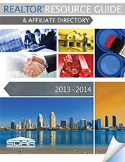

Homeowners often look to their REALTOR® when they need a product or service for their new investment. Much like a Chamber of Commerce represents local business members, the San Diego Association of REALTORS® represents over 12,000 real estate professionals throughout the county.
The REALTOR® Resource Guide & Affiliate Directory is designed to be a handy reference for REALTORS® and their clients. The guide is also available to REALTORS® to give to clients as a resource.
You may download a PDF or forward electronic copies of our 2013-2014 REALTOR® Resource Guide & Affiliate Directory for your professional needs. Click here to view an online version.
or forward electronic copies of our 2013-2014 REALTOR® Resource Guide & Affiliate Directory for your professional needs. Click here to view an online version.
To order additional print copies, please complete the form below. Please contact SDAR at (858) 715-8000 with questions.